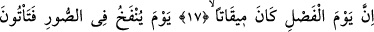
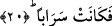
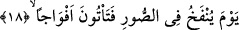

HÜKÜM GÜNÜ
VAKİT OLARAK
BELİRLENMİŞTİR
17. Şüphesiz hüküm günü vakit olarak belirlenmiştir.
18. Sûr’a üflendiği gün, bölük bölük Allah’a gelirsiniz;
19. Gökyüzü açılır ve orada pek çok kapılar oluşur;
20. Dağlar yürütülür, serap haline gelir.
“Şüphesiz hüküm günü” yâni Allah Teâlâ’nın, mutlu olanlarla bahtsızlar arasında
verecek olduğu hüküm günü “vakit olarak belirlenmiştir.” Allah Teâlâ’nın yaratıklar
arasında hüküm vermesi, onların biçimleri, durumları, ahlakları ve amelleri
itibariyledir. Burada “kâne” fiili cümlenin akışına şu takdirde uygundur: Şüphesiz
hüküm günü, Allah Teâlâ’nın ilminde ve ezelî takdîrinde belirlenmiştir. Âyeti böyle
anladığımız takdirde “mâzî” zaman kipinde olan “kane/idi” fiili buraya uygun düşebilir.
Başka türlü de olamaz. Çünkü hüküm günü, “geçmiş zaman” ile kayıtlı değildir. Zira
hüküm günü, zamanın yaratılmasından önce karara bağlanmış bir husustur.
Âyetteki “mîkaten” kelimesi “belirlenmiş vakit” demektir. Aslında öncekilerin ve
sonrakilerin dirilme zamanları ve bunun peşinden amellere karşılık sevap ve cezâ
verilmesi hemen hemen öne de alınmaz, geri de bırakılmaz. Şu halde buradaki
“belirlenmiş vakit” ifâdesi, “mutlak vakit”ten daha özeldir. Nitekim, bu âyetteki
“belirlenmiş vakit”, Allah Teâlâ’nın bizlere vaad etmiş olduğu yeniden dirilme ve
amellere karşılık vermenin zuhûr edeceği vakit olarak kayıtlıdır.
18. Sûra üflendiği gün, bölük bölük Allah’a gelirsiniz;
“Sûra üflendiği gün” cümlesi yukarda geçen “hüküm günü” ifâdesinden bedeldir
veya o cümleden atf-ı beyandır. Bu cümle, o günün ne kadar büyük ve ne derece
dehşetli olduğunu ifâde etmektedir. Önce sûra üflenip sonra hüküm günü başladığı halde
âyette önce hüküm gününün, sonra sûra üflenmesinin zikredilmesinde herhangi bir